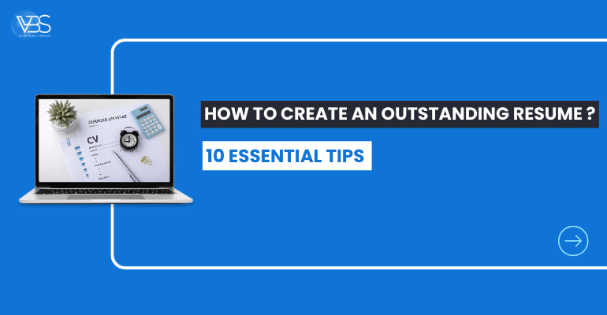

25 December
In the competitive landscape of job hunting, your resume is your primary tool for making a lasting impression on prospective employers. A well-crafted resume serves as your ticket to opening doors and securing coveted positions. Valiant Business Solutions, recognized as one of the
best recruitment agencies in Pune
, understands the pivotal role that a standout resume plays in the job placement process. Here’s a comprehensive guide on how to create an outstanding resume that grabs attention and maximizes your chances of landing your dream job.- Strategic Formatting and Structure: Begin with a clean and professional layout. Use standard fonts, clear headings, and bullet points for easy readability. Organize your resume into distinct sections such as Contact Information, Summary/Objective, Work Experience, Education, Skills, and Achievements. Tailor the structure to highlight your strengths and align with the job you're applying for.
- Tailor for Specific Job Applications: Customize your resume for each job application. Highlight relevant skills, experiences, and achievements that resonate with the job description. Incorporate keywords specific to the industry and role. For instance, if applying for IT roles through a
top job placement consultancy in Pune
, emphasize technical skills and experiences relevant to the position. - Compelling Summary/Objective: Begin with a captivating summary or objective statement that encapsulates your career goals and what you bring to the table. Showcase your unique value proposition and how you can contribute to the organization’s success. For example, emphasize your expertise for the
best job consultancy in Pune
by showcasing your ability to match top talents with the right roles. - Highlight Achievements and Results: Rather than just listing responsibilities, focus on your accomplishments in previous roles. Use quantifiable metrics and specific examples to demonstrate the impact you made. Showcase how you contributed to revenue growth, cost savings, process improvements, or successful projects. This approach significantly enhances the visibility of your contributions, catching the eye of recruitment agencies in India seeking exceptional candidates.
- Education and Certifications:Include your educational background and any relevant certifications or training programs. Highlight academic achievements, specialized courses, or certifications that enhance your qualifications for the desired role.
Top job consultancy in Pune
often looks for candidates who have continually updated their skills and knowledge in their field. - Demonstrate Soft and Hard Skills: Showcase both your technical skills and soft skills. Hard skills are specific, job-related abilities, while soft skills encompass your interpersonal abilities and personality traits. Balance both skill sets to portray a well-rounded profile suitable for
placement services in Pune
that cater to diverse industry requirements. - Use Action-Oriented Language: Employ powerful action verbs to describe your experiences and achievements. Words like "achieved," "implemented," "led," or "optimized" convey a proactive approach and emphasize your role in driving positive outcomes.
- Proofread and Edit:Ensure impeccable grammar, spelling, and punctuation throughout your resume. A single typo can undermine an otherwise stellar application. Review and edit your resume multiple times, and if possible, have a trusted colleague or professional proofreader give it a final check.
- Optimize for Applicant Tracking Systems (ATS):Many
recruitment agencies in Pune
and globally use ATS to streamline the hiring process. Tailor your resume with relevant keywords to ensure it gets past these systems and into the hands of recruiters. However, maintain a natural flow and avoid keyword stuffing. - Consistency and Professionalism:Maintain consistency in formatting, font styles, and bullet points throughout your resume. Present your information in a professional manner that is easy to scan and comprehend. This consistency reflects your attention to detail and professionalism.
In conclusion, your resume serves as your first impression on potential employers and recruitment agencies. Crafting a remarkable resume tailored to the job you're applying for significantly increases your chances of being noticed amidst a pool of applicants. By following these guidelines, job seekers can create an outstanding resume that stands out to the